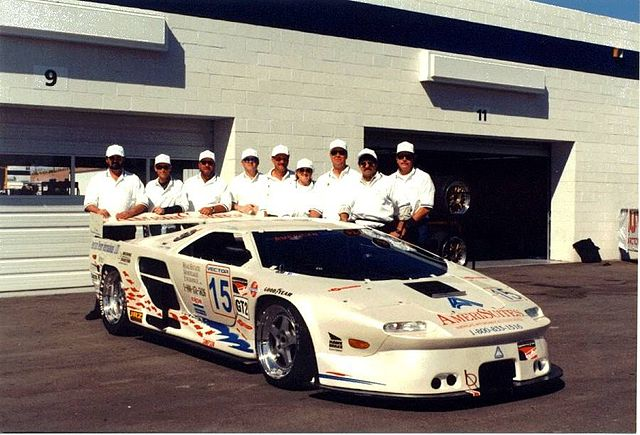
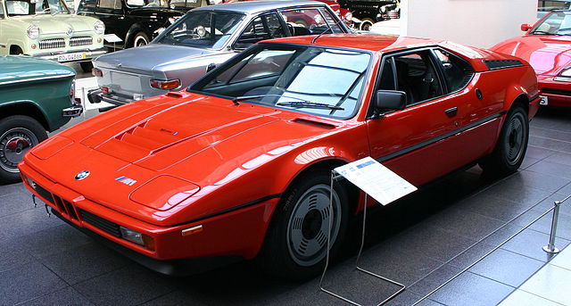

- 1 Історія
- 2 Автомобілі
- 2.1 Серійні моделі
- 2.2 Прототипи
- 2.2.1 Концепткар
- 2.2.2 Спорткари і купе
- 2.2.3 Позашляховики
- 3 Спільна робота з іншими виробниками
- 3.1 Vector M12/M12 GT2
- 3.2 BMW
- 4 Результати продажів
- 5 Примітки
- 6 Посилання
Automobili Lamborghini S.p.A. (італ. Lamborghini) — італійська компанія, виробник спортивних авто, а також тракторів Lamborghini Trattori. Знаходиться у комуні Сант'Агата-Болоньєзе, біля Болоньї. Компанія заснована у 1963 році Ферруччо Ламборгіні. На той час він вже був засновником та власником кількох компаній.
Сам Ламборґіні після заснування компанії володів нею ще 9 років. Теперішній власник компанії — Audi.
Власники Lamborghini:
- Жорж-Анрі Росетті і Рене Ламер (1972, 1974—1977)
- період банкрутства (1977—1984)
- Патрік Мімран (Patrick Mimran, 1984—1987)
- Chrysler (1987—1994)
- MegaTech Ltd. (1994—1998)
- Audi AG (з 1998)
На початку 1960-х років виробник тракторів Ферруччо Ламборґіні (1916—1993) почав виявляти інтерес до розробки швидкісних автомобілів. Він мав автомобілі виробництва Osca, Maserati і Ferrari, але жодне авто його не влаштовувало за всіма показниками.
Є кілька версій щодо причин, з яких Ламборґіні 1962 року заснував власну фірму. Всі вони зводяться до конфлікту між Енцо Феррарі (власником компанії Ferrari) і Ламборґіні Ламборґіні. Найпопулярнішою є версія сина Ферруччо Ламборґіні, за якою його батько прибув на фабрику до Енцо Феррарі поскаржитися на якість зчеплення у своєму автомобілі Ferrari 250 GT. Енцо відправив Ламборґіні назад з побажанням і далі займатися тракторами, бо, мовляв, на автомобілях (тим більше спортивних) Ламборґіні не розуміється. Ламборґіні повернувся на свою фабрику, розібрав трансмісію у власному Ferrari 250 GT і виявив, що виробник багатьох деталей той самий, що й у тракторах «Ламборґіні». На своїх складах він знайшов відповідну заміну, і проблему було вирішено.
Автомобільна фірма «Ламборґіні» була створена як дочірня фірма компанії Lamborghini Trattori S.p.A. Вона працює в селищі Сант-Аґата Болоньєзе (Sant'Agata Bolognese) біля Болоньї.
Ферруччо вирішив, що його автомобіль буде мати двигун V12, і залучив до свого проекту талановитого інженера Джотто Бідзаріні (Giotto Bizzarrini), який до того розробляв Ferrari V12.
Прототип автомобіля, відомий як Lamborghini 350GTV, був представлений на автошоу в Турині 1963 року. Продажі серійної версії цього прототипу були дуже успішними. Народжений під знаком Тельця, ще й аматор кориди, Ферруччо Ламборґіні прикрасив свій логотип зображенням бика .
За успішною моделлю 350GT прийшла не менш успішна Lamborghini 400GT, що принесла достатньо коштів для розробки першого суперкара — легендарного Lamborghini Miura. Цей прототип автомобіля продемонстрував сам Ферруччо в листопаді 1965 р. на автошоу в Турині, а вже в березні 1966 на автошоу в Женеві була представлена робоча версія. Miura мала великий успіх — тільки за 1967 продали 111 авто — і компанія здобула популярність по всьому світу.
1971 — Ламборґіні знову здивував світ прототипом нової моделі Lamborghini Countach. Хоча сам автомобіль почали виробляти лише трьома роками пізніше (1974), до того часу він залишався в центрі уваги на кожному автошоу. Прототип мав нові на той час двері, що відкриваються вертикально, задні забірники повітря і потужний 4-літровий двигун.
Проте 1972 року компанія зіштовхнулася із серйозною кризою — перервався контракт на постачання великої партії тракторів у Південну Америку. Брак коштів змусив Ферруччо продати частину свого тракторного виробництва, яку купила компанія Fiat. Зрештою все тракторне виробництво перейшло у власність Same Deutz-Fahr Group, яка й виробляє трактори «Ламборґіні» досі.
Протягом 1970-х років успішні продажі Lamborghini Countach підтримували компанію на плаву. Незабаром автомобільне виробництво стало самодостатнім і прибутковим, а, проте, Ламборґіні продав свою компанію швейцарським інвесторам — спочатку 51 % Жоржу-Анрі Росетті (Georges-Henri Rossetti, 1972), а 1974 решту — Рене Ламеру (René Leimer). Сам Феруччо Ламборґіні помер 1993 року у віці 76 років.
Внаслідок нафтової кризи 1970-х рр. продажі спортивних автомобілів різко впали. Компанія «Ламборґіні», в числі інших, зіткнулася з фінансовими проблемами, постачання запасних частин були зірвані.
Замовлення на автомобілі були розписані на два роки вперед, і покупці були дуже незадоволені таким терміном очікування.
Урешті-решт 1978 італійський суд оголосив компанію банкрутом, і 1981 її купили брати Жан і Патрік Мімрани зі Швейцарії.
Урешті-решт 1978 італійський суд оголосив компанію банкрутом, і 1981 її купили брати Жан і Патрік Мімрани зі Швейцарії.
1987 — компанію перекупив американський концерн «Крайслер» (Chrysler). У цей час тривала робота над наступником Countach — Lamborghini Diablo. Значні технічні та фінансові ресурси були залучені в модернізацію фірми та її продукції, і кінцевий результат став успіхом — модель Diablo дуже швидко знову вивела компанію на світовий рівень.
Проте восени 1993 корпорація Chrysler через фінансові труднощі була змушена продати «Ламборґіні» інвестиційній групі «МегаТех» (Mega-Tech або M'tec), зареєстрованій на Бермудських островах, але справжніми власниками якої були індонезійський нафтохімічний консорціум «Масахара Буана» та Томі Сухарто (Tommy Suharto).
1998 — через ті ж самі фінансові проблеми компанія знову поміняла власника. Цього разу ним стала компанія Audi AG. Новий власник неабияк вплинув на дизайн суперкарів, сьогоднішніх Lamborghini Murciélago. Технічні можливості Audi допомогли створити один із найвишуканіших спортивних автомобілів «Ламборґіні».Автомобілі «Ламборґіні» є одними з найбільш потужних, дорогих і ексклюзивних автомобілів серійного збирання. Крім того, різні моделі мають свої унікальні технічні новації, наприклад, кузов із вуглеволокна чи високотехнологічні двигуни V10. Оригінальний стиль автомобілів розробляли відомі дизайнери та відповідні фірми: Франко Скальйоне (Franco Scaglione), Touring, Zagato, Маріо Марацці (Mario Marazzi), Bertone, ItalDesign і Марчелло Ґандіні (Marcello Gandini).
Автомобілі
- Серійні моделі
- 1964–1967 Lamborghini 350GT
- 1966–1968 Lamborghini 400GT
- 1966–1973 Lamborghini Miura
- 1968–1970 Lamborghini Islero
- 1968–1978 Lamborghini Espada
- 1970–1976 Lamborghini Jarama
- 1974–1990 Lamborghini Countach
- 1975–1979 Lamborghini Urraco
- 1976–1981 Lamborghini Silhouette
- 1981–1988 Lamborghini Jalpa
- 1982–1993 Lamborghini LM002
- 1990–2001 Lamborghini Diablo
- 2001—2010 Lamborghini Murciélago
- з 2003 Lamborghini Gallardo
- 2008 Lamborghini Reventón
- 2011 Lamborghini Aventador
- 2011 Lamborghini Sesto Elemento
- 2013 Lamborghini Veneno
Прототипи
- Концепткар
- Lamborghini Sesto Elemento Concept (2010)
- Lamborghini Ankonian Concept (2012)
- Lamborghini Madura (тривимірна намальована модель, в якій передбачається наявність гібридної силової установки)
- Lamborghini Urus Concept (2012, концепт кросовера)
- Lamborghini Egoista Concept (2013)
- 350GTV (1963, Turin Motor Show, von Scaglione)
- 3500 GTZ Zagato (1965, London Motor Show, von Zagato)
- 350 GTS (1965, Pariser Salon, von Touring)
- Marco Polo (1982, Bologna Motor Show, von Italdesign Giugiaro)
- Heuliez Pregunta (1998, Auto Salon Paris)
- ......
- Cheetah (1977, Geneva Auto Show)
- LM001 (1981, Geneva Auto Show, SUV)
- LMA002 (1982, Geneva Auto Show)
- LM003 (SUV)
- Urus (SUV)
Спільна робота з іншими виробниками
В 1994 компанія виготовила для фірми Vector Motors Corporation суперкар Vector M12.
В 1976 компанія виготовила для концерну BMW суперкар
Компанія Audi представила концепт електромобіля ActiveSphere. Це кросовер, створений для бездоріжжя, доповнений
міцним днищем і змінною підвіскою. Базовий дорожній просвіт складає 208 мм, його можна змінювати на 40 мм вгору
або вниз, залежно від типу дороги (або бездоріжжя).
Компанія Audi представила концепт електромобіля ActiveSphere. Це кросовер, створений для бездоріжжя, доповнений міцним днищем і змінною підвіскою. Базовий дорожній просвіт складає 208 мм, його можна змінювати на 40 мм вгору або вниз, залежно від типу дороги (або бездоріжжя).